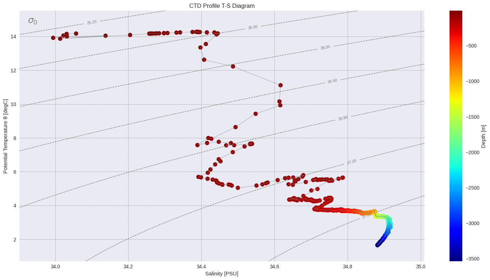
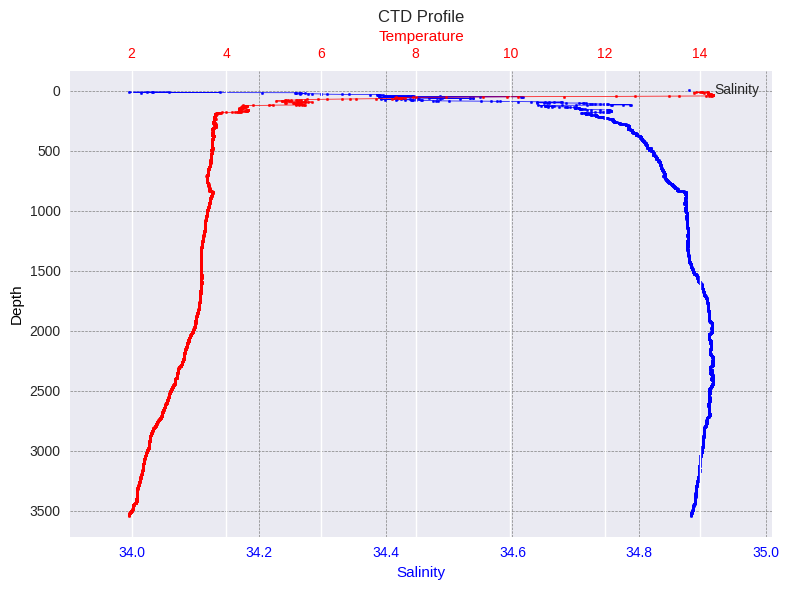
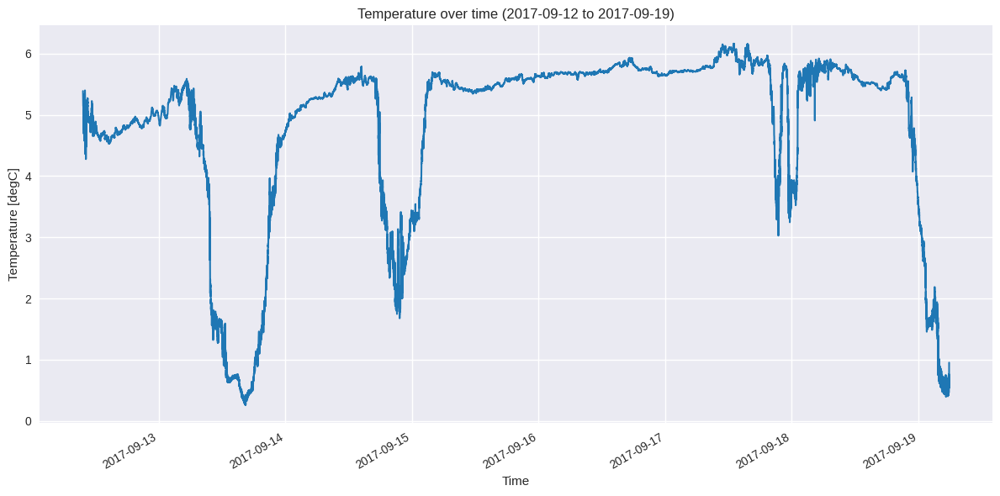
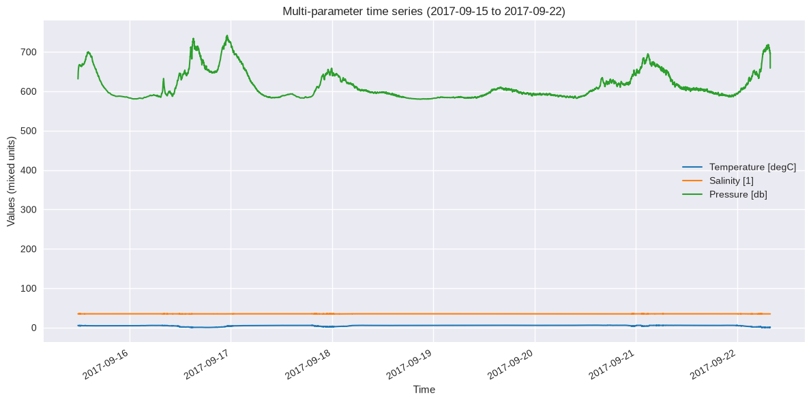

SeaSenseLib Demo
This notebook demonstrates the capabilities of SeaSenseLib for reading oceanographic instrument data from various formats, writing it to netCDF and making basic plots or statistical calculations.
Overview
SeaSenseLib is a Python library for reading, converting, and plotting oceanographic sensor data from various instrument formats. It provides:
Simple API with
ssl.read()andssl.write()functionsReaders for multiple formats (CNV, NetCDF, RBR, ADCP, etc.)
Writers for data export (NetCDF, CSV, Excel)
Plotters for oceanographic visualizations via
ssl.plot.*Processors for basic statistical calculations or data manipulation
Generalised API features
The SeaSenseLib API simplifies common tasks:
import seasenselib as ssl
# Read any supported format into an xarray dataset
data = ssl.read('sensor_data.cnv')
# Create oceanographic plots
ssl.plot('depth-profile', profile_data, title="CTD Profile")
ssl.plot('ts-diagram', profile_data, title="T-S Diagram")
ssl.plot('time-series', profile_data, parameters=['temperature'], title="CTD Profile T-S Diagram")
# Export to various formats
ssl.write(data, 'output.nc') # NetCDF
ssl.write(data, 'output.csv') # CSV
[1]:
import numpy as np
import matplotlib.pyplot as plt
import warnings
warnings.filterwarnings('ignore') # Suppress warnings for cleaner output
# Import SeaSenseLib
import seasenselib as ssl
# For processors, we directly import each processor
from seasenselib.processors import SubsetProcessor, StatisticsProcessor
# Set up matplotlib for inline plotting
plt.style.use('seaborn-v0_8')
plt.rcParams['figure.figsize'] = (10, 6)
print("✓ SeaSenseLib demo environment ready!")
print(f"✓ SeaSenseLib version: {ssl.__version__}")
✓ SeaSenseLib demo environment ready!
✓ SeaSenseLib version: 0.6.1
1. Reading Data from Different Formats
SeaSenseLib can read data from various oceanographic instruments. Let’s start with the example data files.
1.1 Reading CTD Profile Data (CNV Format)
First, let’s read a vertical CTD profile from a SeaBird CNV file. SeaSenseLib uses the python package pycnv to handle Seabird files, then returns data in an xarray dataset.
Note: The pycnv package is installed automatically as a dependency when you install SeaSenseLib via pip. You do not need to install it separately.
[2]:
# Read CTD profile data using `ssl.read()`
profile_data = ssl.read("../examples/MSM121_054_1db.cnv") # Alternative: sea-practical-2023.cnv
print("CTD Profile Dataset:")
print(f"Dimensions: {dict(profile_data.dims)}")
print(f"Data variables: {list(profile_data.data_vars)}")
print(f"Coordinates: {list(profile_data.coords)}")
print(f"\nData shape: {profile_data.sizes}")
type(profile_data)
pycnv: Could not compute datetime dates based on timeM
Density derivation used 'temperature_1' (lowest suffix) among 2 temperature variables.
Sound speed derivation used 'temperature_1' (lowest suffix) among 2 temperature variables.
CTD Profile Dataset:
Dimensions: {'time': 3593}
Data variables: ['absolute_salinity', 'conductivity_1', 'conductivity_2', 'conservative_temperature_1', 'conservative_temperature_2', 'density', 'depth', 'flag', 'oxygen_1', 'oxygen_2', 'potential_temperature_1', 'potential_temperature_2', 'pressure', 'salinity', 'speed_of_sound', 'temperature_1', 'temperature_2', 'timeQ', 'timeS']
Coordinates: ['latitude', 'longitude', 'time']
Data shape: Frozen({'time': 3593})
[2]:
xarray.core.dataset.Dataset
1.2 Reading Time Series Data (Moored Instrument)
Now let’s read time series data from a moored instrument, again from Seabird in native *.cnv format.
[3]:
# Read time series data from moored microCAT time series
timeseries_data = ssl.read("../examples/denmark-strait-ds-m1-17.cnv")
print("Time Series Dataset:")
print(f"Dimensions: {dict(timeseries_data.dims)}")
print(f"Data variables: {list(timeseries_data.data_vars)}")
print(f"Time range: {timeseries_data.time.min().values} to {timeseries_data.time.max().values}")
print(f"Duration: {len(timeseries_data.time)} measurements")
pycnv: Could not compute datetime dates based on timeM
pycnv: Could not compute datetime dates based on timeS
Time Series Dataset:
Dimensions: {'time': 59088}
Data variables: ['absolute_salinity', 'conductivity', 'conservative_temperature', 'density', 'depth', 'flag', 'potential_temperature', 'pressure', 'salinity', 'scan', 'speed_of_sound', 'temperature', 'timeJ']
Time range: 2017-09-15T11:45:09.043200 to 2017-09-22T07:52:59.030400
Duration: 59088 measurements
2. Data Exploration and Quality Assessment
Let’s explore the data structure and note that units have been added from the metadata in the *.cnv file. In the example profile data used here, there are two temperature and two conductivity channels, which are stored as variables temperature_1 and temperature_2, etc. If you use your own data, the number and names of channels may differ depending on the instrument and configuration. You can update the variable name mapping in seasenselib/parameters.py.
[4]:
# Display detailed information about the profile dataset
print("\n=== Available Parameters and Units ===")
for var in profile_data.data_vars:
attrs = profile_data[var].attrs
units = attrs.get('units', 'no units')
long_name = attrs.get('long_name', var)
print(f"{var}: {long_name} ({units})")
print("=== CTD Profile Data Details ===")
profile_data
=== Available Parameters and Units ===
absolute_salinity: Absolute Salinity (g kg-1)
conductivity_1: Conductivity (mS cm-1)
conductivity_2: Conductivity (mS cm-1)
conservative_temperature_1: Conservative Temperature (degC)
conservative_temperature_2: Conservative Temperature (degC)
density: Sea Water Density (kg m-3)
depth: Depth (meters)
flag: flag (no units)
oxygen_1: Oxygen (ml/l)
oxygen_2: Oxygen (ml/l)
potential_temperature_1: Potential Temperature (degree_C)
potential_temperature_2: Potential Temperature (degree_C)
pressure: Pressure (db)
salinity: Salinity (1)
speed_of_sound: Speed of Sound in Sea Water (m s-1)
temperature_1: Temperature (degC)
temperature_2: Temperature (degC)
timeQ: timeQ (seconds)
timeS: timeS (seconds)
=== CTD Profile Data Details ===
[4]:
<xarray.Dataset> Size: 632kB
Dimensions: (time: 3593)
Coordinates:
* time (time) datetime64[us] 29kB 2000-01-01T12:28:3...
latitude (time) float64 29kB 49.71 49.71 ... 49.71 49.71
longitude (time) float64 29kB -45.0 -45.0 ... -45.0 -45.0
Data variables: (12/19)
absolute_salinity (time) float64 29kB 34.22 34.19 ... 35.05 35.05
conductivity_1 (time) float64 29kB 40.89 40.53 ... 32.11 32.11
conductivity_2 (time) float64 29kB 41.09 41.06 ... 32.11 32.11
conservative_temperature_1 (time) float64 29kB 14.18 14.16 ... 1.655 1.653
conservative_temperature_2 (time) float64 29kB 14.18 14.18 ... 1.653 1.652
density (time) float64 29kB 1.025e+03 ... 1.044e+03
... ...
salinity (time) float64 29kB 34.06 34.03 ... 34.88 34.88
speed_of_sound (time) float64 29kB 1.503e+03 ... 1.518e+03
temperature_1 (time) float64 29kB 14.17 14.15 ... 1.946 1.944
temperature_2 (time) float64 29kB 14.17 14.17 ... 1.944 1.943
timeQ (time) float64 29kB 7.501e+08 ... 7.501e+08
timeS (time) float64 29kB 134.5 136.7 ... 3.815e+03
Attributes: (12/40)
raw_format: sbe-cnv
raw_filename: MSM121_054_1db.cnv
Conventions: ACDD-1.3, CF-1.13
standard_name_vocabulary: CF-1.13
processing_level: L1
geospatial_lat_min: 49.70834
... ...
processor_execution_time_utc: 2026-08-13T19:35:15.650926Z
processor_machine: runnervmzvulz
processor_os: Linux 6.17.0-1022-azure
history: 2026-08-13T19:35:15.650944Z - Processed by...
date_created: 2026-08-13T19:35:15.650944Z
date_modified: 2026-08-13T19:35:15.650944Z2.1 Basic Statistics
Seasenselib provides a basic statistics generator seasenselib.processors.StatisticsProcessor for a quick look at the data.
[5]:
# Calculate basic statistics for profile data
available_params = [var for var in profile_data.data_vars if var in ['temperature_1', 'salinity', 'pressure', 'oxygen']]
print("=== CTD Profile Statistics ===")
for param in available_params:
try:
stats_processor = StatisticsProcessor(profile_data, param)
stats = stats_processor.get_all_statistics()
print(f"\n{param.capitalize()}:")
print(f" Mean: {stats['mean']:.3f}")
print(f" Std: {stats['std']:.3f}")
print(f" Min: {stats['min']:.3f}")
print(f" Max: {stats['max']:.3f}")
print(f" Valid points: {stats['count_valid']}")
except (ValueError, KeyError) as e:
print(f"\n{param.capitalize()}: Not available in dataset")
=== CTD Profile Statistics ===
Pressure:
Mean: 1803.000
Std: 1037.210
Min: 7.000
Max: 3599.000
Valid points: 3593
Salinity:
Mean: 34.865
Std: 0.089
Min: 33.994
Max: 34.917
Valid points: 3593
Temperature_1:
Mean: 3.318
Std: 1.362
Min: 1.944
Max: 14.286
Valid points: 3593
3. Data Conversion and Export
SeaSenseLib can export data to various formats while preserving metadata and following CF conventions. Note that if the demo output file already exists, ssl will not overwrite it.
[6]:
# Convert CNV to NetCDF and CSV using the new API
ssl.write(profile_data, 'demo_output_profile.nc')
print("✓ Exported to NetCDF: demo_output_profile.nc")
ssl.write(profile_data, 'demo_output_profile.csv')
print("✓ Exported to CSV: demo_output_profile.csv")
✓ Exported to NetCDF: demo_output_profile.nc
✓ Exported to CSV: demo_output_profile.csv
3.1 Verify NetCDF Export
Let’s read back the NetCDF file to verify the export worked correctly:
[7]:
# Read back the exported NetCDF file using the new API
netcdf_data = ssl.read('demo_output_profile.nc')
print("Exported NetCDF file structure:")
print(f"Dimensions: {dict(netcdf_data.dims)}")
print(f"Variables: {list(netcdf_data.data_vars)}")
print(f"Data preserved: {len(netcdf_data.data_vars)} variables exported successfully")
print("\n✓ NetCDF export/import successful!")
Exported NetCDF file structure:
Dimensions: {'time': 3593}
Variables: ['absolute_salinity', 'conductivity_1', 'conductivity_2', 'conservative_temperature_1', 'conservative_temperature_2', 'density', 'depth', 'flag', 'oxygen_1', 'oxygen_2', 'potential_temperature_1', 'potential_temperature_2', 'pressure', 'salinity', 'speed_of_sound', 'temperature_1', 'temperature_2', 'timeQ', 'timeS']
Data preserved: 19 variables exported successfully
✓ NetCDF export/import successful!
4. Data Visualization
SeaSenseLib provides a few plotting tools for oceanographic data visualization:
4.1 Temperature-Salinity (T-S) Diagram
T-S diagrams show the relationship between temperature and salinity with density isolines.
Note: The plotting tool by default expects variables temperature and salinity which are set in parameters.py. If you’re working with CTD data, and you want to specify to always use temperature_1, then this can be updated in parameters.py. For the purpose of this demonstration, we’ll create new variable temperature.
[8]:
# Add variable 'temperature'
profile_data['temperature'] = profile_data['temperature_1']
ssl.plot('ts-diagram', profile_data, title="CTD Profile T-S Diagram")
print("✓ T-S diagram created")

✓ T-S diagram created
4.2 Vertical Profile Plot
Display the CTD cast as a vertical profile showing how parameters change with depth:
[9]:
# Create vertical profile plot using the new API
ssl.plot('depth-profile', profile_data, title="CTD Profile")
print("✓ Vertical profile plot created")

✓ Vertical profile plot created
4.3 Time Series Plots
For the moored instrument data, let’s create time series plots:
[10]:
ssl.plot('time-series', timeseries_data, parameters=['temperature'], title="Temperature Time Series")
print("✓ Temperature time series created")

✓ Temperature time series created
[11]:
# Multi-parameter time series
# You can plot multiple parameters at once, but this plotter uses the same y-axis limits for all parameters.
available_ts_params = [p for p in ['temperature', 'salinity', 'pressure'] if p in timeseries_data.data_vars]
if len(available_ts_params) >= 2:
ssl.plot('time-series', timeseries_data, parameters=available_ts_params, title="CTD Profile T-S Diagram")
print(f"✓ Multi-parameter time series created for: {available_ts_params[:2]}")
else:
print(f"Insufficient parameters for multi-plot. Available: {available_ts_params}")

✓ Multi-parameter time series created for: ['temperature', 'salinity']
5. Further data tools
SeaSenseLib provides basic tools for subsetting and statistics:
5.1 Data Subsetting
Extract specific depth ranges or time periods:
[12]:
# Subset profile data by depth (if pressure/depth data available)
subset_processor = SubsetProcessor(profile_data)
if 'pressure' in profile_data.data_vars:
# Subset to upper 50 dbar (approximately 50 meters)
shallow_data = subset_processor.set_parameter_name('pressure').set_parameter_value_min(0).set_parameter_value_max(50).get_subset()
print(f"Original data points: {len(profile_data.pressure)}")
print(f"Shallow subset (0-50 dbar): {len(shallow_data.pressure)}")
print(f"Pressure range in subset: {shallow_data.pressure.min().values:.1f} - {shallow_data.pressure.max().values:.1f} dbar")
else:
print("Pressure data not available for depth subsetting")
Original data points: 3593
Shallow subset (0-50 dbar): 44
Pressure range in subset: 7.0 - 50.0 dbar
[13]:
import pandas as pd
# Subset time series data by time period
if 'time' in timeseries_data.coords and len(timeseries_data.time) > 100:
ts_subset_processor = SubsetProcessor(timeseries_data)
# Get the first half of the time series
start_time = timeseries_data.time.min()
mid_time = timeseries_data.time[len(timeseries_data.time)//2]
first_half = ts_subset_processor.set_time_min(pd.Timestamp(start_time.values)).set_time_max(pd.Timestamp(mid_time.values)).get_subset()
print(f"Original time series length: {len(timeseries_data.time)}")
print(f"First half subset length: {len(first_half.time)}")
print(f"Time range in subset: {first_half.time.min().values} to {first_half.time.max().values}")
else:
print("Time data not suitable for subsetting")
Original time series length: 59088
First half subset length: 29545
Time range in subset: 2017-09-15T11:45:09.043200 to 2017-09-18T21:49:09.004800
5.2 Statistical Analysis
Calculate statistics for the datasets:
[14]:
# Compare statistics between full profile and shallow subset
if 'pressure' in profile_data.data_vars and 'temperature' in profile_data.data_vars:
full_temp_processor = StatisticsProcessor(profile_data, 'temperature')
full_stats = full_temp_processor.get_all_statistics()
shallow_temp_processor = StatisticsProcessor(shallow_data, 'temperature')
shallow_stats = shallow_temp_processor.get_all_statistics()
print("=== Temperature Statistics Comparison ===")
print(f"Full profile - Mean: {full_stats['mean']:.3f}°C, Range: {full_stats['min']:.3f} - {full_stats['max']:.3f}°C")
print(f"Shallow (0-50m) - Mean: {shallow_stats['mean']:.3f}°C, Range: {shallow_stats['min']:.3f} - {shallow_stats['max']:.3f}°C")
temp_diff = shallow_stats['mean'] - full_stats['mean']
print(f"\nTemperature difference (shallow - full): {temp_diff:.3f}°C")
if temp_diff > 0:
print("→ Shallow waters are warmer (typical thermocline pattern)")
else:
print("→ Shallow waters are cooler")
=== Temperature Statistics Comparison ===
Full profile - Mean: 3.318°C, Range: 1.944 - 14.286°C
Shallow (0-50m) - Mean: 13.701°C, Range: 9.430 - 14.286°C
Temperature difference (shallow - full): 10.382°C
→ Shallow waters are warmer (typical thermocline pattern)
Next Steps
To learn more about SeaSenseLib:
Documentation: Check the full documentation for detailed API reference
CLI Usage: Try the command-line interface with
seasenselib --helpMore Formats: Explore support for RBR, ADCP, and other instrument formats (see the Moored Instruments demo)
Custom Processing: Implement custom readers and processors for your specific needs
Integration: Integrate SeaSenseLib into your oceanographic data processing workflows
Example CLI Commands
# List supported formats
seasenselib formats
# Convert CNV to NetCDF
seasenselib convert -i examples/sea-practical-2023.cnv -o output.nc
# Create plots
seasenselib plot ts-diagram -i output.nc -o ts_diagram.png
seasenselib plot depth-profile -i output.nc -o profile.png
seasenselib plot time-series -i examples/denmark-strait-ds-m1-17.cnv -p temperature
Happy oceanographic data processing! 🌊